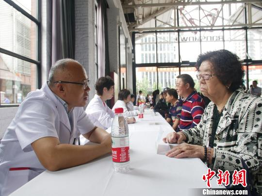
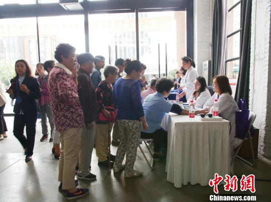

上海约三成成年人患高血压 约半数患病不自知
2018年10月09日 17:31 来源: 综合 作者:
9日，上海市卫生计生委举行市级大型专家义务咨询
中新网上海10月9日电 (记者 陈静)上海市卫生计生委9日披露，上海常住居民18岁及以上成人中，高血压患病率高达28.4%。这意味着此间每10个成年人中就有近3个为高血压患者。

当日，该委公布的上海市慢性病及其危险因素监测结果还显示，高血压患者的知晓率仅为56.1%。这说明，接近一半的高血压患者不知晓自己的血压。
正在此间举行的第21个“全国高血压日”暨第二十四届上海市心脑血管病防治宣传周主题为“知晓您的血压”。

活动旨在树立民众健康第一责任人意识，倡导重视高血压疾病，知晓自己的血压，促进自我血压监测，进而提高高血压知晓率、治疗率和控制率。
据悉，高血压是当下最常见的慢性病之一，更是心脏病、脑卒中、肾脏病发病和死亡的最重要的危险因素。约70%的脑卒中死亡和约50%心肌梗死死亡与高血压密切相关。据介绍，约50%的高血压患者是无症状的，甚至直到发生卒中、心肌梗死、失明、肾衰竭等严重的并发症时，才发现自己是高血压患者。
因此定期监测血压十分重要。正常成年人至少每2年测量1次血压；35岁以上人群，即使因其他疾病就诊，也应该测量血压；肥胖或大量饮酒或饮食口味重的人群，建议每半年测量1次血压。如果出现头痛、头晕、心悸、后颈部疼痛等症状时，应尽早测量血压，警惕是否是高血压所致的症状。
9日，上海市卫生计生委举行市级大型专家义务咨询。活动现场设有专家咨询，血压、血糖、体重测量，健康教育宣传折页发放等免费服务。
民众不仅可以去医院诊所测量血压，也可以自己学习血压测量的方法，在家自测血压，做好血压记录。正确的方法如下：
推荐使用经国际标准认证的上臂式家用电子血压计；并按照使用说明正确测量。
二、如何做一个好的整形医生
在家测定的血压一般低于医院诊室血压，在家自测收缩压≥135mmHg或者舒张压≥85mmHg，即认为血压偏高。
刚开始检测血压和血压控制不稳定的患者，可以选择每天血压的两个高峰，即上午七点到九点、下午四点到六点时段测量血压，每次测量两到三次取平均值，可以连续测量一周，观察血压控制情况并及时和医生沟通。血压控制平稳的患者，可以每周测量一次，或出现头晕头痛等不适症状时加测一次。
应在温度适宜、安静无噪音的环境下测量血压，测量前1小时内应避免剧烈运动以及进食、喝饮料(水除外)，特别是含咖啡因的饮料；避免长时间暴露于过高或过低的温度下；测量前静坐休息5-10分钟，测量时精神放松，避免用力、说话和移动。